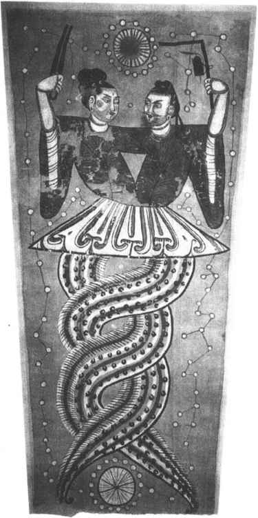
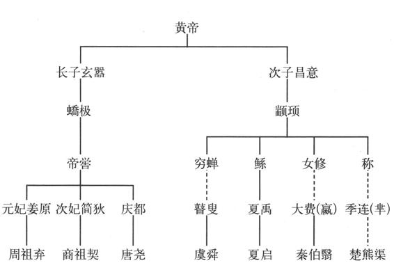

新石器文化的多元区域性发展，表明史前时期中华大地上存在过许多创造文化的氏族部落和方国，是中国版的“英雄时代”。这不仅为考古发掘所证实，而且在神话传说、民族学等方面也有许多资料可资佐证。世界任何民族最初的历史，总是用“口耳相传”的方法流传，古文献中保存的古代传说，都是因当时没有文字而流传下来的史料，用这种史料所记述的时代，也被称作“传说时代”。中国古代文献中，记载了天地开辟、人类起源、文明肇始之类神话传说，徐旭生与苏秉琦合撰的《试论传说材料的整理与传说时代的研究》一文，把这些材料分为原生和再生两类，原生的包括所有见于早期记载的传闻异说，再生的包括一切见于后期记载的、伪托的、孳生的传说故事。再生的部分基本发生在东汉以后，但其中并非完全没有原生的内容。根据材料的内容与写定的先后，大概分为三期：第一期，包括商周到战国前期的作品。如甲骨文、金文及《尚书》、《周易》、《诗经》、《论语》、《左传》、《国语》等书。第二期，包括战国后期到西汉末的作品。如先秦诸子、《周书》、《山海经》、《国策》、《大戴礼》、《史记》、《淮南子》等著述。第三期，东汉以后作品。如谯周、皇甫谧、郦道元诸人书中的传说。除了文献记载外，战国秦汉考古发现的一些帛画、画像石、画像砖、壁画，也有许多神话传说题材，可以增进我们的了解。正是借助于文献和考古的资料，我们得以知道有关盘古、女娲、伏羲、黄帝、炎帝、蚩尤、帝俊、后羿、夸父、嫦娥等上古神话传说故事，进而推测史前文化的面貌。（图1—4）

图1-4 唐代伏羲女娲帛画
神话自然不能当做历史来穿凿附会，但神话的流传及其内涵，实在是文化传统嬗变中其来有自的现象，不会凭空产生。赫胥黎说：“古代的传说，如用现代严密的科学方法去检验，大都是像梦一样平凡地消逝了。但是奇怪的是，这种像梦一样的传说，往往是一个半醒半睡的梦，预示着真实。”［3］古代文献中记载的史前社会“三皇五帝”之类神话传说，虽然屡经臆测改篡，但拨去历史的迷雾，仍不难发现有价值的因素。“三皇五帝”自然不会像儒家学派纂集的帝王谱系那样精心排列，但是其具体名号如何，史前社会有无其人，实际上并不重要。我们可以把他们看做是我们祖先处于史前各个不同文化阶段的象征，可以笼统地说，他们是史前社会华夏、羌、夷、戎、狄、苗、蛮等氏族部落的首领，或者是氏族部落的象征物（图腾），或者是氏族部落的名号。他们所代表的氏族部落，“随着社会生产的发展和人口的增加，氏族部落的不断迁移和相互交往的扩大，各个部落之间在某些时候，某些地方形成相反的利益，而在另一些时候和另一些地方又形成了相同的利益，由此引起了各个部落的分化和组合、战争和联盟，逐渐形成为不同的民族”（郭沫若主编《中国史稿》）。这些民族就是今天的汉族和其他少数民族的前身。
民族融合、发展的过程，实际上也是文化融合、发展的过程，而在这一过程中，文明程度高的民族往往占有主导地位。根据已故文化史专家徐旭生的研究，中华民族的远祖可分为华夏、东夷、苗蛮三大文化集团。［4］华夏集团发祥于黄土高原，后沿黄河东进，散布于中国的中部及北部地区。即仰韶文化、河南龙山文化分布区。华夏集团内部分成两支：姬姓的黄帝氏族，姜姓的炎帝氏族。“昔少典氏娶于有峤氏，生黄帝、炎帝。黄帝以姬水成，炎帝以姜水成。成而异德，故黄帝为姬，炎帝为姜。”（《国语·晋语四》）黄帝位列五帝之首，传说炎帝是他的弟弟，五帝中的颛顼、帝喾，以及夏、商、周的始祖，也都跟黄帝有血缘关系。当然这种关系很可能出于后人的伪造，因为中国人强烈的“大一统”观念，往往会用血缘关系来统辖各个部族。（图1—5）但是与考古发掘相互印证，我们还是可以推测一些史前社会的端倪。

图1-5 《史记》所载黄帝世系
东夷集团的活动区域主要在黄河下游，包括今山东、河南东南和安徽中部地区。在考古学上，属大汶口文化、山东龙山文化及青莲岗文化江北类型分布区。五帝中的太昊、少昊，以及与黄帝恶战的蚩尤、凿井的伯益、射日的后羿、为舜掌管刑法的皋陶，都属于这个集团。
苗蛮集团主要活动于今湖北、湖南、江西一带。即大溪文化、屈家岭文化分布区，如若向东延伸，河姆渡文化、良渚文化等也可归入此集团。三苗、伏羲、女娲、兜，都属于这个集团。
随着社会生产力的发展和文明程度的提高，私有财产、私有观念萌生，血缘关系逐渐为地域关系所取代，各氏族部落基于自己的利益和崇尚，诉诸武力解决矛盾冲突。黄帝、炎帝所代表的部族，兄弟同室操戈，大战于阪泉之野，炎帝溃败，黄帝独自成为华夏集团的代表。此后，黄帝又与东夷集团的蚩尤大战于涿鹿之野，获胜后将蚩尤处死。黄帝之后，华夏集团经尧、舜、禹几代努力，又征服了苗蛮集团，把中华文明传播到两湖三湘大地。华夏集团的胜利，巩固了其在中华民族及文化多元发生中的主流地位，“华夏”成为中华民族的历史称号，“黄帝”成为中华民族共同祭奠的人文始祖。实际上经历了大规模战争、迁徙之后，华夏集团本身的民族血液、文化纯洁都已不复存在，大量融进东夷、苗蛮等诸多部族的文化成分。实际上，“世界上没有血统很纯粹的民族。民族既非单元，文化也就不会单元。反过来，文化越灿烂，民族的血统似乎越复杂”［5］。